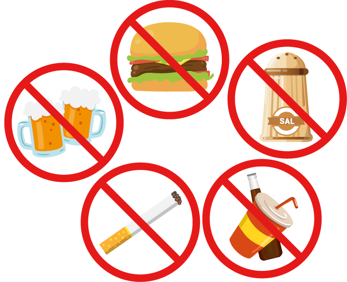

- {{ 'PREVENT_DRC.ITEN1' | translate }}
- {{ 'PREVENT_DRC.ITEN2' | translate }}
- {{ 'PREVENT_DRC.ITEN3' | translate }}
- {{ 'PREVENT_DRC.ITEN4' | translate }}
- {{ 'PREVENT_DRC.ITEN5' | translate }}
- {{ 'PREVENT_DRC.ITEN6' | translate }}
- {{ 'PREVENT_DRC.ITEN7' | translate }}
- {{ 'PREVENT_DRC.ITEN8' | translate }}
- {{ 'PREVENT_DRC.ITEN9' | translate }}
- {{ 'PREVENT_DRC.ITEN10' | translate }}